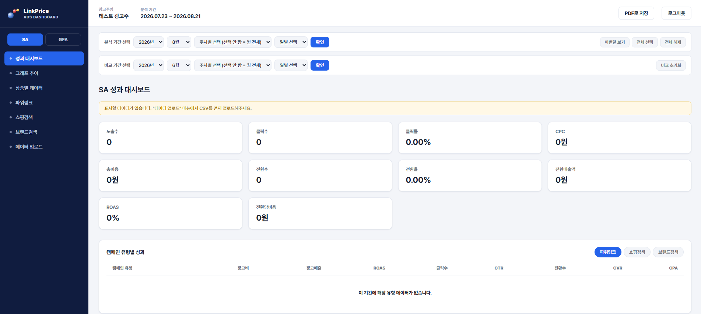
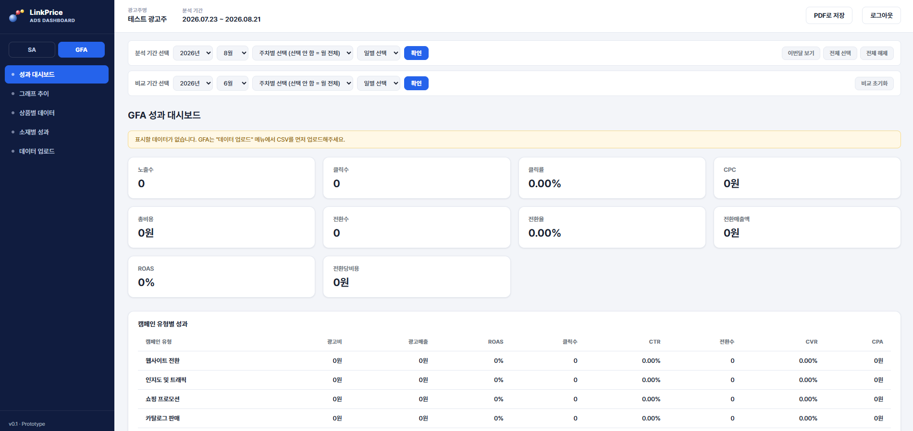
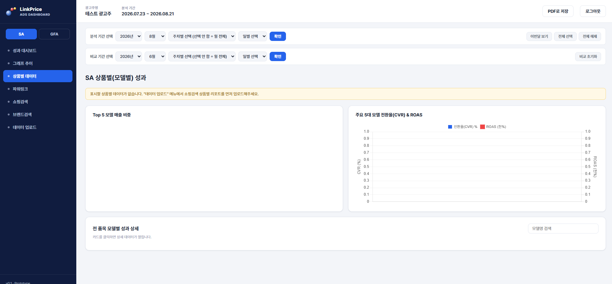
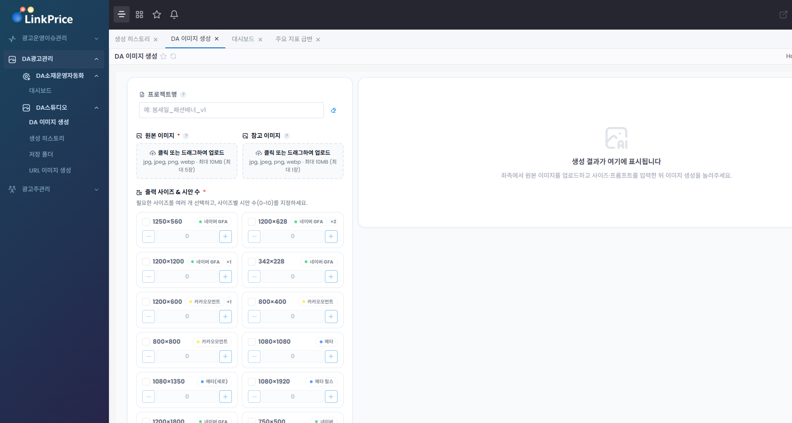

매체별 데이터 분산
여러 광고 플랫폼의 성과를 각각 확인해야 해 전체 흐름을 한 번에 보기 어렵습니다.
MULTI-CHANNEL · REAL-TIME · PRODUCT ANALYTICS · AI INSIGHT
여러 광고 매체의 데이터를 하나의 화면에서 실시간으로 확인하고, 상품별 분석을 통해 실제 운영 개선까지 연결하는 AI 광고 성과 관리 솔루션입니다.

WHY THIS DASHBOARD
매체별 데이터를 따로 확인하고 보고서를 다시 가공하는 동안, 비효율 캠페인과 저성과 상품에는 광고비가 계속 집행될 수 있습니다. 중요한 것은 데이터를 모으는 일이 아니라, 누수를 빠르게 발견하고 바로 조치하는 것입니다.
실시간 모니터링과 상품별 분석을 통해 비효율 구간을 조기에 확인하고, 예산을 성과가 높은 영역으로 빠르게 재배분할 수 있습니다.
여러 광고 플랫폼의 성과를 각각 확인해야 해 전체 흐름을 한 번에 보기 어렵습니다.
일간·주간·월간 보고 때마다 데이터를 내려받고 같은 가공 작업을 반복하게 됩니다.
비효율 캠페인과 저성과 상품을 늦게 발견하면 불필요한 광고비 집행이 계속될 수 있습니다.
문제 발견이 늦어질수록 예산 조정과 상품별 운영 개선 시점도 함께 늦어집니다.
REAL-TIME MONITORING
여러 광고 매체의 핵심 지표를 동일한 기준으로 확인하고, 분석 기간과 비교 기간을 설정해 성과 변화를 빠르게 파악할 수 있습니다.

PRODUCT ANALYTICS
상품별 매출 비중과 핵심 모델의 전환율·ROAS, 전 품목 상세 성과까지 연결해 예산 배분과 운영 우선순위를 판단할 수 있습니다.
TOP 5 SALES SHARE
상위 상품이 전체 매출에서 차지하는 비중을 도넛 차트로 직관적으로 확인합니다.
TOP 5 MODEL PERFORMANCE
핵심 상품군의 전환 효율과 광고 수익성을 함께 비교해 확대·개선 대상을 빠르게 구분합니다.

DA CREATIVE AUTOMATION
원본 이미지와 참고 이미지를 업로드하고 필요한 매체 규격을 선택하면, 반복적인 리사이징과 소재 제작 업무를 자동화해 운영 시간을 줄일 수 있습니다.

AI INSIGHT
AI 분석은 단순한 지표 요약이 아니라 성과 변화의 원인을 찾고, 운영자가 먼저 확인해야 할 개선 우선순위를 제시하는 방향으로 활용할 수 있습니다.
CPC 급등, CVR 하락, ROAS 감소 등 성과 변화가 큰 구간을 빠르게 포착합니다.
매체, 캠페인, 기간, 상품 단위로 성과 변화를 나눠 문제 구간을 좁혀갑니다.
예산 확대, 비효율 상품 조정, 소재·타겟·입찰 개선 등 운영 방향을 결정합니다.
“상위 3개 상품의 매출 기여도가 전체의 71%를 차지합니다. 반면 상품 E는 광고비 비중 대비 ROAS가 낮아 예산 축소 또는 소재 개선 검토가 필요합니다.”
PERFORMANCE LOOP
데이터 수집부터 분석, 문제 발견, 개선안 도출, 실제 광고 운영 반영까지 하나의 흐름으로 연결합니다.
일·주·월 성과를 필요한 시점에 즉시 확인합니다.
여러 광고 매체를 하나의 기준으로 관리합니다.
실제 매출을 만드는 상품과 비효율 상품을 구분합니다.
데이터를 예산과 운영 전략 조정에 바로 활용합니다.
LINKPRICE AI ADS PERFORMANCE DASHBOARD
실시간 모니터링부터 상품별 분석, AI 인사이트까지.
광고주와 운영자가 같은 데이터를 보고 더 빠르게 의사결정할 수 있도록 돕습니다.